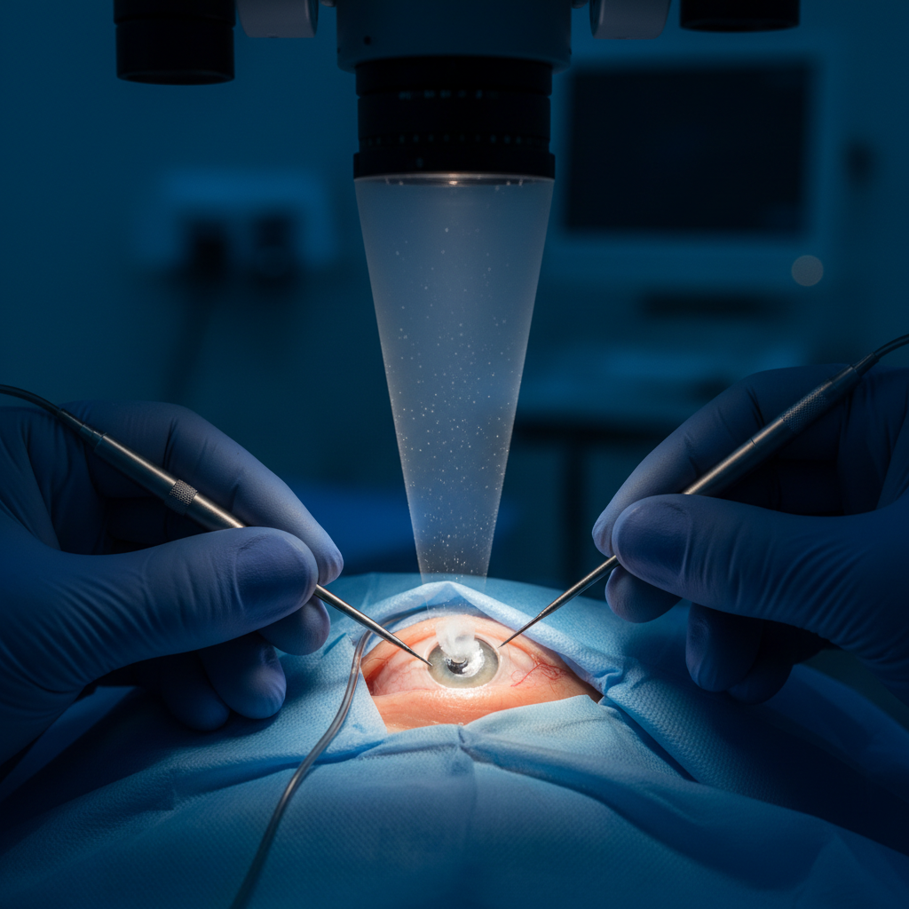

Факоэмульсификация катаракты
Золотой стандарт современной офтальмохирургии. Метод заключается в фрагментации помутневшего хрусталика с помощью ультразвуковых колебаний высокой частоты через микроразрез.
Процедура занимает от 5 до 10 минут, проводится под местной капельной анестезией и не требует наложения швов, что гарантирует быстрое восстановление пациента.
- Разрез < 2 мм
- минимальная инвазия
- Без швов
- технология заживления
- 10 мин
- среднее время операции